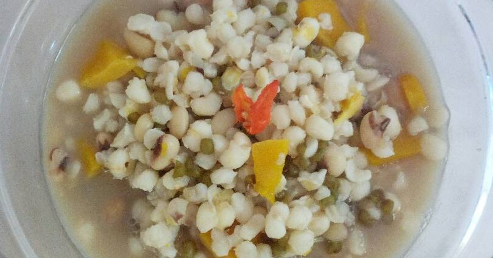

Ayam Betutu
anjai.

Babi Guling
Makanan ikonik Bali dengan daging babi berbumbu base genep dan kulit renyah.

Plecing Kangkung
Hidangan khas Lombok berupa kangkung segar dengan sambal tomat pedas.

Sate Bulayak
Sate khas Lombok dengan lontong bulat dibungkus daun enau.

Se'i Sapi
Daging sapi asap khas NTT dengan aroma kayu kesambi yang khas.

Jagung Bose
Makanan tradisional NTT dari jagung dan kacang yang dimasak dengan santan.